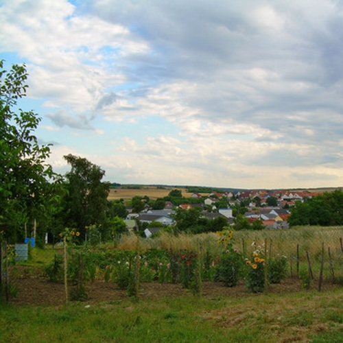

Koerber Emil Karl (1888 - 1949)
Spannberg


Gruess Gott, mein Name ist Emil Koerber und ich bin Lehrer. Ich wurde 1888 in Spannberg geboren. Sehen Sie sich doch einmal meine Dia Show an.
 Ref. Nr. 26
Ref. Nr. 26
Schritt zurueck
Namensindex
Berufsindex
Jahresindex
Ortsindex
Fuehrungen
Struktur
Ahnengalerie
Geographie
Diashow
Dokumente
Familienfotos
Change to English
Musik / Stop
Musik / Stop
Koerber Emil wurde im Sternbild des Loewen geboren an einem Dienstag, den 21.08.1888 in Spannberg als Sohn von
- Koerber Emil, geb. 1864, Schulleiter in Parbasdorf aus Jaegerndorf
- und Schmarda Wilhelmine, geb. 1863, Handarbeitslehrerin aus Spannberg
Er hatte 3 Geschwister: Ernst, geb. 1890, Emma, geb. 1893 und Elisabeth, geb. 1901. Er heiratete im Alter von 25 Jahren im Jahr 1913 in Wien die 4 Jahre juengere Mock Alice Emilia Anna, Hausfrau halb in Schule, geb. 1892 aus Baden. Er war Lehrer und das Ehepaar wohnte in Deutsch_Wagram. Sie hatten 2 Kinder: Alice Anna Anna, geb. 1916 und Hertha Wilhelmine, geb. 1914.
ueber seine Jugend ist wenig bekannt, er stammte aus einer Lehrerfamilie - sein Vater war Schulleiter in Parbasdorf und seine Mutter war Handarbeitslehrerin.
1909 war er Aushilfslehrer und musste in 35 verschiedenen Schulen aushelfen, durch die staendigen Reisen war er mehr in Gasthaeusern und Weinkellern daheim als in seinen ungeheizten Quartieren. In Siebenbrunn verdiente er mit dem Orgelspiel in der Kirche mehr als durch sein Lehrergehalt. Nach der Kirche ging er ins Wirtshaus ass ein Gulasch und trank - nach eigener Aussage - seine 30 Seidel Bier. Bei einer Heimfahrt von einer Gesellschaftsfahrt (wo auch sein zukuenftiger Schwiegervater Albrecht Mock dabei war), kippte der Pferde wagen um und drueckte ihm Schien- und Wadenbein ab. Ein Besuch seiner zukuenftigen Frau im Krankenhaus verschlug ihm derart die Rede dass ihn Alice beinahe nie mehr sehen wollte. Er verlobte sich aber dennoch zu Weihnachten 1912 und heiratete sie kurz danach. Zu dieser Zeit war er bereits Lehrer in Neusiedl an der Tschechischen Grenze. Er kuemmerte sich zunaechst wenig um seine Frau, die sehr kraenklich war und die Ehe war zu Beginn eine Katastrophe.
Erst nach der Geburt seiner zweiten Tochter besann er sich auf seine Pflichten als Familienvater. Als seine Frau sich beide Arme auskegelte und daran 12 Jahre lang laborierte lernte er sogar, ihr diese wieder einzurichten - einmal sogar ganz unbemerkt waehrend eines Konzertbesuches in Muenchen. 1916 war er beim Militaer, schaffte es aber dank seiner Verletzung am Bein zumeist in der Stube zu hocken. In Neusiedl gab es nach dem Krieg nichts mehr zu essen, so zog er mit seiner Familie zu den Eltern nach Deutsch-Wagram.
1919 erhielt er dann eine Fixanstellung als Lehrer in Aderklaa. Er engagierte sich als Orgelspieler, Gemeindesekretaer, Versicherungsagent und wohl auch ein bisschen bei der aufkommenden NSDAP.
1942 wurde die Schule in Aderklaa wegen Kindermangels geschlossen und er musste notgedrungen mit seiner Familie wieder zu den Eltern nach Wagram ziehen. 1945 wurde er zum Volkssturm eingezogen. Nach dem Krieg herrschte grosse Hungersnot - er pachtete einen Acker in Strasshof wo er Gemuese zuechtete das aber vor der Ernte gestohlen wurde. Er importierte Gaense aus Polen die seine Schwiegermutter schoppte, versuchte sich in der Huehner- Kaninchen und Bienenzucht -aber nicht immer erfolgreich! Da er als "belastet" galt bekam er keine Rente.
Die Zeiten waren sehr hart. Ende der 40er Jahre verlor er zunehmend an Gewicht, seine Schulkameraden erkannten in bei einer Maturafeier gar nicht mehr, weigerte sich aber einen Arzt zu konsultieren obwohl in seine Frau vehement dazu draengte. Er sagte zu ihr: "Du bist ja immer krank, mir schmeckt das Essen noch". Letztendlich half aber alles nichts und er kam ins Krankenhaus, es wurde Prostatakrebs diagnostiziert und er wurde sofort operiert. Da er es nicht lassen konnte an seinem Katheder herumzudoktern zog er sich eine schwere Sepsis zu, er bekam 8 Bluttransfusionen - doch es ging weiter mit ihm bergab.
Als er zwischendurch kurzzeitig wieder zu Hause war, begann er zu halluzinieren, er sah einen Maharadscha und glaubte, dass unter dem Bett wertvolle oelaktien versteckt waeren. Seine zweite Tochter die gerade schwanger war fuerchtete sich vor ihm. Seine Schwiegermutter die ihn pflegte brach sich dabei den Oberschenkelhals und so lagen sie zum Schluss beide im Lainzer Spital, wo er kurze Zeit spaeter verstarb. Sein zweites Enkelkind hatte er nicht mehr erlebt.
Er starb im Alter von 60 Jahren an einem Montag, den 31.01.1949 in Wien 22 Jahre frueher als seine Frau an Nierenentzuendung. Es trauerten um ihn unter anderem seine Ehefrau Alice, seine Toechter Alice Brenner und Hertha Seil und sein Schwiegersohn Karl Brenner.
Er lebte in der Epoche des Historismus und als junger Mann noch unter der Regentschaft des Habsburg-Lothringer Kaisers Franz-Joseph I. Zu einigen seiner gleichaltrigen Zeitgenossen gehoeren Albert Einstein, Franz Marc und Picasso. Waehrend seines Lebens gab es den Ersten Weltkrieg und den Zweiten Weltkrieg. Zu epochalen Erfindungen oder Entdeckungen seiner Zeit zaehlen unter anderem der Dieselmotor, das Spiel 'Mensch aergere dich nicht', Einsteins Relativitaetstheorie und die Zahnpasta.